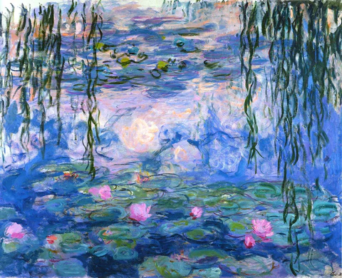

Overview
In Lab 6, I created an interactive map of my favorite hometown locations in Mansfield, TX and surrounding cities, using Python, Mapbox, and Folium. The map visualizes different location types (restaurants, parks, entertainment) and includes pop-upswith descriptions and images.
Reflection
My basemap was inspired by Water Lilies by Claude Monet, one of my favorite paintings. I’ve always loved the blend of blues, greens, and soft pinks, and lilies are also one of my favorite flowers, so it felt like a personal and natural source of inspiration. In the painting, Monet uses soft brushstrokes and subtle color transitions to create reflections on the water, giving the scene a calm, dreamlike feeling. Nothing feels harsh or sharply outlined; instead, the colors blend together in a peaceful and cohesive way. I wanted my map to reflect that same calm atmosphere while still being clear and functional. When designing the basemap, I focused on translating the painting’s color palette and mood into geographic features. I used muted greens for land and soft blues for water to reflect the pond in the painting. The roads were styled in light pink tones inspired by Monet’s subtle variations in color. I avoided bold or highly saturated colors because they felt too harsh compared to the painting’s softness. My goal was to create a map that felt visually balanced and cohesive while still clearly showing important features.
One of the main cartographic challenges was designing the map to work across multiple zoom levels. At lower zoom levels, I limited visible features to major highways and larger city labels to avoid clutter and maintain the calm aesthetic. As users zoom in, smaller roads and additional labels gradually appear. I adjusted label sizes, halo thickness, and feature visibility by scale to keep the map readable without overwhelming the design. Balancing artistic inspiration with clear hierarchy and scale was an important part of the process. Styling the city labels was another challenge. I wanted white text with a halo so the labels would stand out against the pink roads and green land. Finding the correct settings in Mapbox Studio to adjust font color, halo, and size was more confusing than expected, but after experimenting with symbol layers, I was able to achieve a clean and readable result.
During the coding portion, I used ChatGPT to help structure my Python script. When my HTML output showed a blank basemap, I initially thought the issue was in my Mapbox settings. After reviewing my code and asking Claude for help, I discovered the problem was an improperly formatted CSV file. Once I fixed the column headers and delimiters, everything worked correctly. Overall, this lab challenged me creatively and technically, and I’m proud of how my artistic inspiration translated into an interactive map.

Artist: Claude Monet